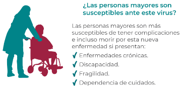
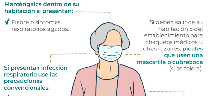
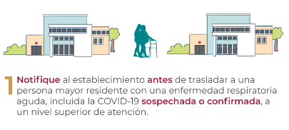

Guías de cuidado

Prevención en personas mayores
Las personas mayores son más susceptibles de tener complicaciones e incluso morir por esta nueva enfermedad.
Ver más...

Prevenir la introducción
¿Cómo prevenir la introducción del nuevo coronavirus en su establecimiento?
Ver más...

Transmisión entre establecimientos
¿Cómo prevenir la transmisión del nuevo coronavirus entre establecimientos?
Ver más...